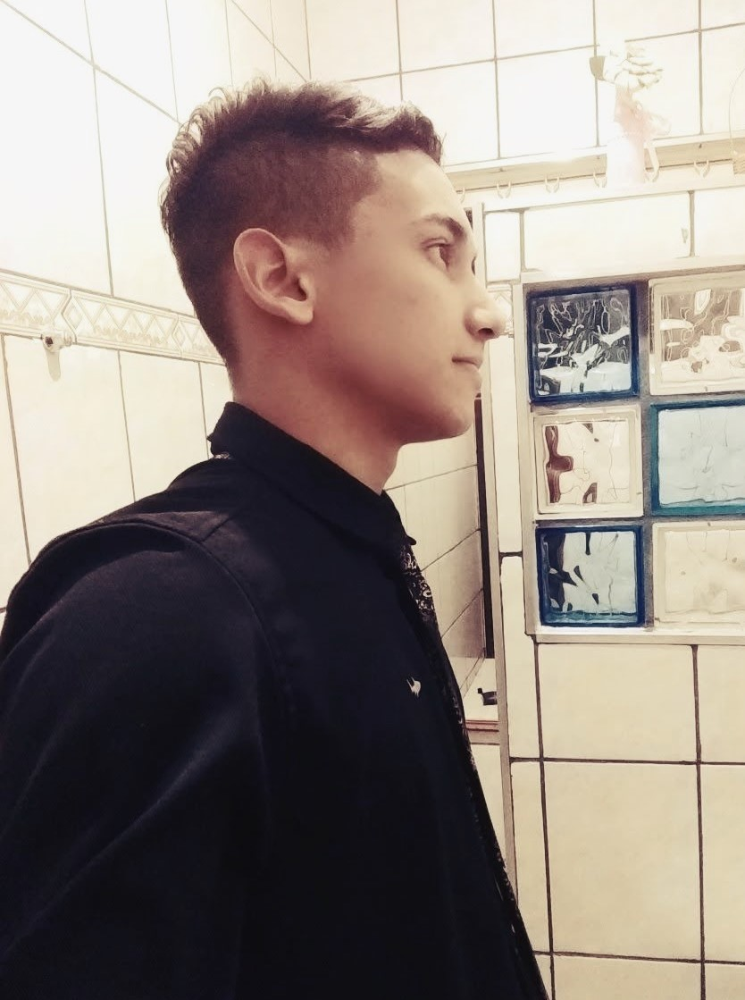

Sobre , Dilione Junior
📓 Dilione Junior é estudante de programação Front-End 📓
📚 Abordando linguagens : Javascript | HTML | CSS 📚
🛶 Praticando desafios e cursos time Alura 🛶
🏆 Desenvolvendo paginas web utilizando HTML E CSS 🏆
💻 Aluno EmpowerCodePcd Zenvia 🦾🦿
Origens
Nasceu em 09 de Novembro de 1998 na cidade de Jacareí-SP,
Dilione junior é feliz onde vive e tem orgulho de suas raizes culturais.
Logo após concluir o ensino médio, se descobriu no mundo da tecnologia com 18 anos de idade, durante seu 1° emprego como Aprendiz.
Através de um software de gerenciamento de estoques (SAP) foi notável como a tecnologia facilita o processo de uma empresa.
Observado que principalmente as empresas de grande porte (multinacionais), necessitam de uma grande movimentação de dados.
Logo após, Dilione realizou uma pesquisa em diversas aréas da tecnologia, a aréa robótica, controladores lógicos e programáveis (CLP).
Até que surgiu uma oportunidade de estudos em programação, em parceria com a Alura, a empresa Zenvia, criou o time Empowder Code PCD.
Neste período me identifiquei com o desenvolvimento Front-End.
O time é composto por Dev's experientes em programação, juntos realizamos reuniões, tiramos dúvidas, apresentamos nossos projetos pessoais.